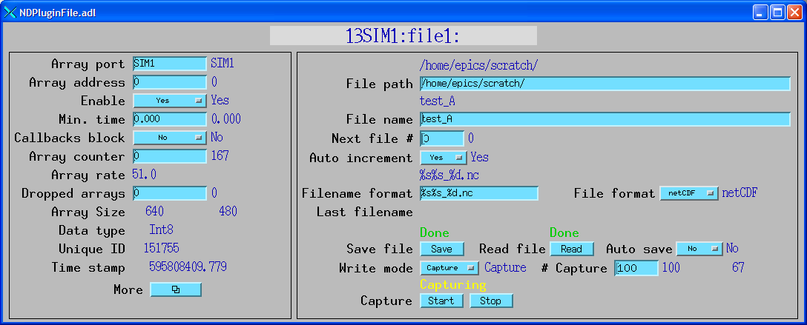

NDPluginFile saves the NDArray data from a callback to a disk file.
NDPluginFile inherits from NDPluginDriver. This plugin currently saves data in the netCDF file format, which is a portable self-describing binary file format supported by UniData at UCAR (University Corporation for Atmospheric Research). There are netCDF libraries for C, C++, Fortran, and Java. Other languages, including Matlab and IDL have built-in support for netCDF. There are also add-on interfaces available for Python, Ruby and other languages.
The NDArray callback data can be written to disk in 1 of 3 modes:
Note that the colorMode and bayerFormat must not be changed while file capture or file streaming are in progress because that would change the structure of the data array.
The NDPluginFile public interface is defined in NDPluginFile.h as follows:
/* Note that the file format enum must agree with the mbbo/mbbi records in the NDFile.template file */
typedef enum {
NDFileFormatNetCDF
} NDPluginFileFormat_t;
...
class NDPluginFile : public NDPluginDriver {
public:
NDPluginFile(const char *portName, int queueSize, int blockingCallbacks,
const char *NDArrayPort, int NDArrayAddr);
/* These methods override those in the base class */
void processCallbacks(NDArray *pArray);
asynStatus writeInt32(asynUser *pasynUser, epicsInt32 value);
asynStatus writeNDArray(asynUser *pasynUser, void *genericPointer);
asynStatus drvUserCreate(asynUser *pasynUser, const char *drvInfo,
const char **pptypeName, size_t *psize);
...
}
NDPluginFile supports all of the file saving parameters defined in ADStdDriverParams.h, e.g. ADFilePath, ADFileName, etc. Thus, the same interface that is used for saving files directly in a driver is used for this plugin.
The NDPluginFile plugin is created with the following command, either from C/C++ or from the EPICS IOC shell.
drvNDFileConfigure(const char *portName, int queueSize, int blockingCallbacks,
const char *NDArrayPort, int NDArrayAddr)
| Argument | Description |
|---|---|
portName |
The name of the asyn port for this plugin. |
queueSize |
The maximum number of NDArray objects that can be queued for processing. Passed to the NDPluginDriver base class constructor. |
blockingCallbacks |
Flag controlling whether callbacks block. Passed to the NDPluginDriver base class constructor. |
NDArrayPort |
The name of the asyn port of the driver that will provide the NDArray data. Passed to the NDPluginDriver base class constructor. |
NDArrayAddr |
The asyn addr of the asyn port of the driver that will provide the NDArray data. Passed to the NDPluginDriver base class constructor. |
The following is the MEDM screen that provides access to the parameters in NDPluginDriver.h and NDPluginFile.h through records in NDPluginBase.template and NDFile.template. This is the MEDM screen that is used to control the saving of images to disk.

The following is the header contents of a netCDF file produced by this plugin. This information was produced with the following command:
ncdump -h testB_3.nc
netcdf testB_3 {
dimensions:
numArrays = UNLIMITED ; // (10 currently)
dim0 = 1024 ;
dim1 = 1360 ;
dim2 = 3 ;
variables:
int uniqueId(numArrays) ;
double timeStamp(numArrays) ;
byte array_data(numArrays, dim0, dim1, dim2) ;
// global attributes:
:dataType = 1 ;
:numArrayDims = 3 ;
:dimSize = 3, 1360, 1024 ;
:dimOffset = 0, 0, 0 ;
:dimBinning = 1, 1, 1 ;
:dimReverse = 0, 0, 0 ;
:colorMode = "RGB1" ;
:bayerPattern = "RGGB" ;
}
This is an explanation of this output:
There is an IDL function, read_nd_netcdf that can be used to read the netCDF files created by this plugin. This routine is contained in the CARS IDL detector package. This function is also contained in the areaDetector distribution in the Viewers/IDL directory.
Additional file formats, such as TIFF and HDF may be supported in the future.